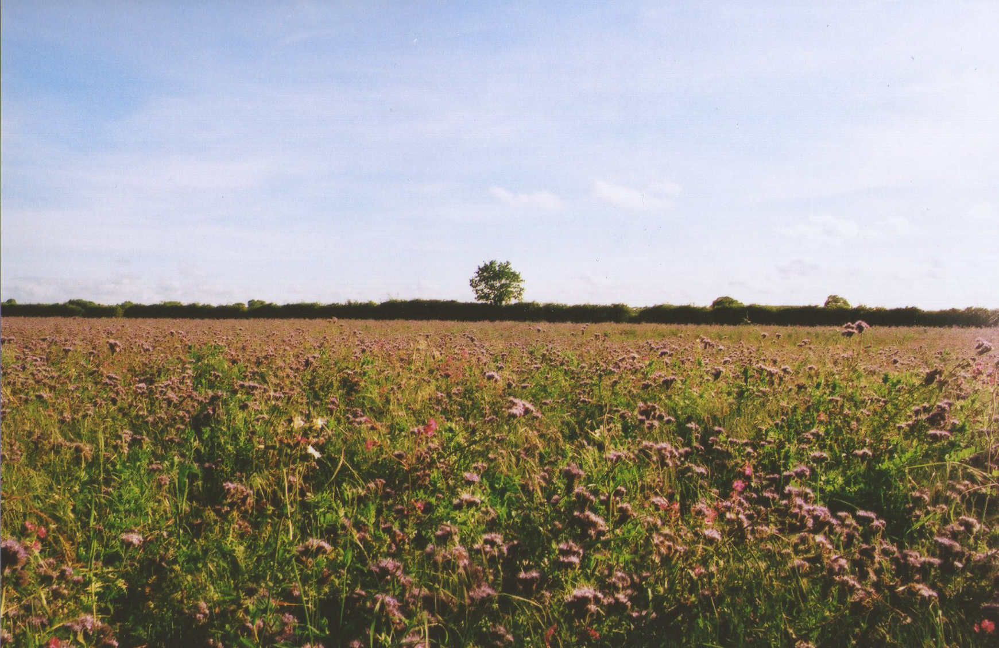
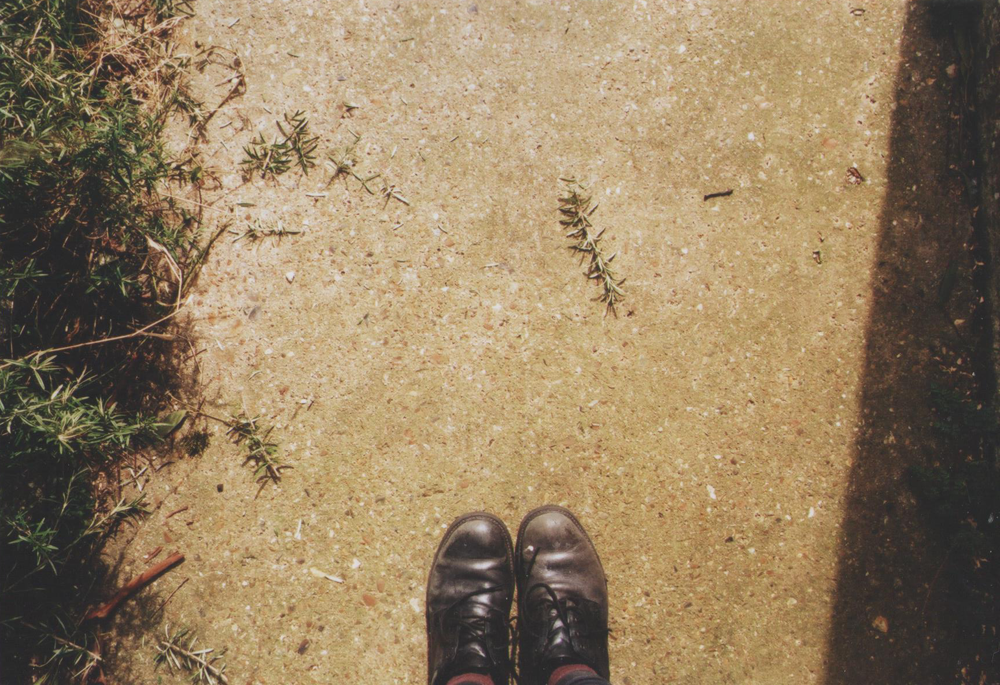
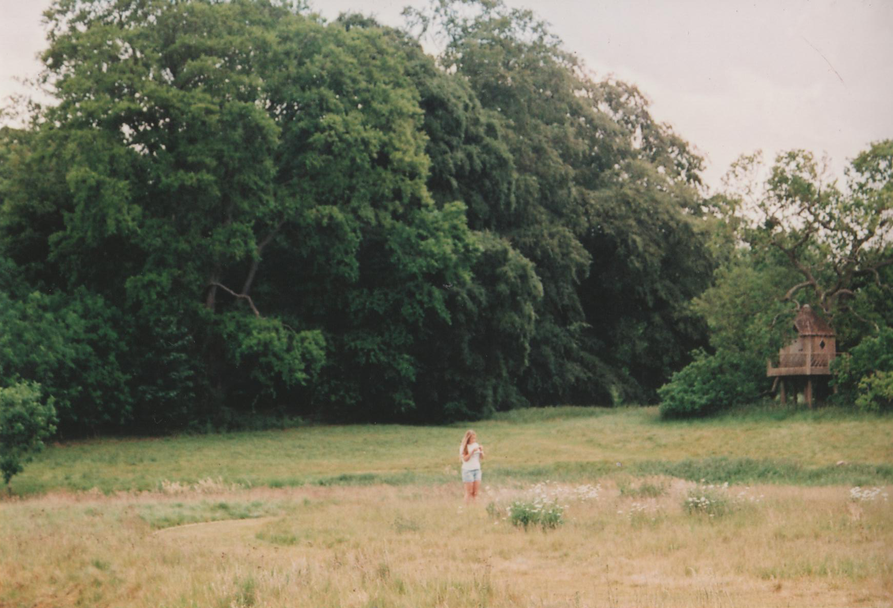
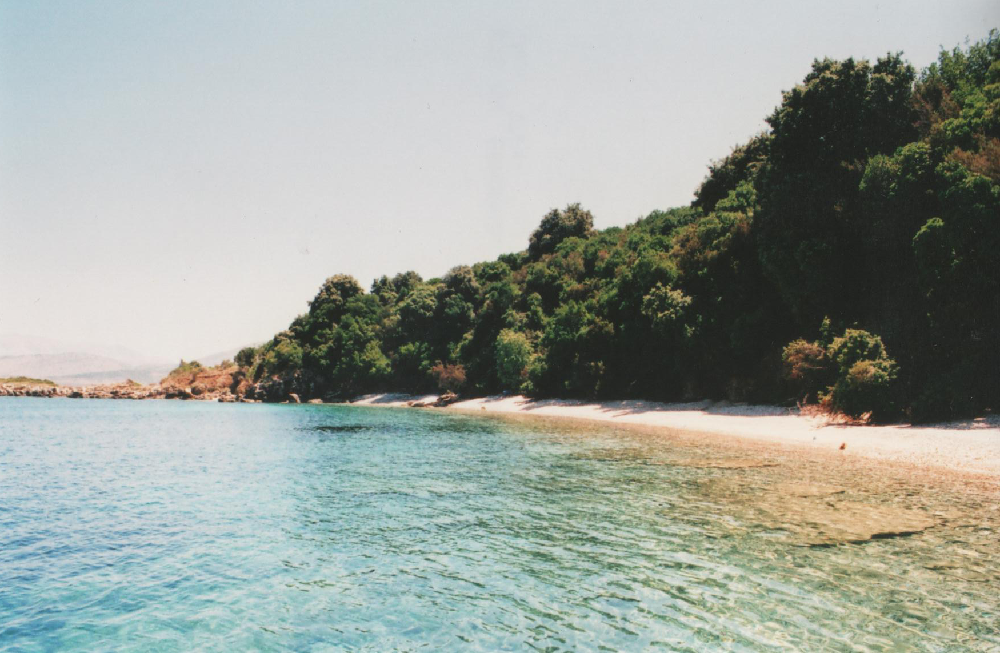
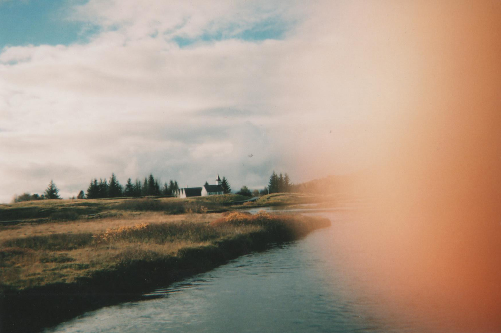

1
The views are else. They are not pictures.
A picture is a snapshot of reality: a social act. The views are different: they are more simple, more serene. More concrete, as if a hand could stretch so easily, in a manner so simple, and touch everything into being -the dreams, the hopes, and ambitions-, and erase all troubles, and fix all cracks in existence.
The views are gates into our own aspirations: gates into the things that we dreamed of, and saw repeated many times in the eyes and perspectives of others; dreams of being away and doing things – all of those things, like flying far and become these images of people that are themselves two-dimensional and flawed, and yet, so desired.
Examples are varied. Their mechanism are complex, from the reflection of aesthetics to the crafting of moods – but all of them are a product of our modern imaginaries, as much as they are a subterfuge: a place in which we ourselves see our own limbs being reflected in promises and processes of trends and simplicity.
In these things, iterated through the channels and the nets that we ourselves hanged on our walls, they seem to reflect something else, something further away, something different. In these views is planted the idea that the innate complexity of an overreaching cosmos and the lives hereby confined are both apt to be compressed inside a little frame: a little space, enough to hold, and sustain, the weight of all eternity.
☙
11
For eternity is what we all secretly fear, and wish for, when throughout the years, our bones change; and the weight of time erodes the pillars of aspirations in which we built these dreams of treasure; and when the days become longer, and rain falls straight; and when lights stop, and days blend, becoming a stretch of hoping, these visions – these hold the sans behind.
They calm us; for in them, time freezes. In them, it may appear that we're a part of something bigger, grander. Grandiose. In these spaces, life becomes myth – becomes extraordinary. All of these things, which are impossible to say -sunk into the depths of our words-, become thus common points, places of worship and rivers of thought. And in that process, they complete us.
Their shape but changing, in the end, they all share a quality of futility and sudden shock, a fleeting compression of perspective into a single moment, a currency of lights and shadows. They are made, and then posted – and under our views, they open, as flowers blooming under innumerable questions, for the peering of our hopings -decaying, ever-.
In these moments that we scramble for meaning, these help us neglect the boredoms that plague our everyday struggle, and fix the fleetingness of our mundanity. These views make us closer to the ideas of purpose that we were promised to reach. For we were promised so, time ago, when we didn't even know the meaning of the words themselves – we were promised that our lives would be respected, and our dreams amount to something else than dust in the hands of our forefathers.
We were promised all this and more; but so few of those promises were real.
☙
111
As the future holds, and the past runs past us, our lives became different. Our paths became much more erratic, and confusing – our decisions not entirely ours, but a mixture of all the things we knew, and believed, and believed we knew. All of these things came together in strange ways to comform the steps that we took, in a process that never felt ours. For life is often unpredictable, and we far from perfect.
But our thoughts follow order – the order of the brain, at the least. And in that order, which was shaped by uncountable films, prevails the idea -and the hope- that there is a simpler way: a simpler alternative, to avoid the setbacks of existence. There is an idea of somewhere else, a different place, a different way, that may provide a simpler path. A concise life, made of better decisions.
That is our destiny, we say; or rather, our destination. Just as nostalgia was initially meant to describe the desire to return in space -and not time-, these new spaces are consumed by the desire to be transported to different states of being. In these views, we desire so much – we desire a better life, more cinematic, more cohesive, more plot-like, more credible. We desire the things that we've been taught to desire.
And in that process, and in those fabricated realities, we behold the realization of our phantasies of self – through these windows, we see the shadows in the distance. We seemingly come to face the ways in which we could define who we are, or rather, who we'd like to be. We behold this frozen viewpoint, and desire to be in them – to make ourselves in their image. To become frozen.
☙
1v
But there's a danger. With time, our waves of rage can become tiles in our walls of perspective; a mosaic impenetrable, incredible, implacable. The daily meditations and ramblings of fire can fade, slowly, into a suspended mediocrity. A noise within the trees. A constant reminder of the dreams we set back, and the realities we settled for.
It's an easy risk to fall prey to the consumption of these images, these views of promise – for their shapes present to us the simplicity of just opening new windows, being exposed to more examples, and the examples just keep going. In that way they all are but candies for the mind that keeps eating, devouring the promises of future, without moving ever past them.
The inspirations are endless. The actions, however, require effort, and loss, and words to oneself. They require decisions, and bets into the future, which are not always easy to make. These words carry in themselves the weight of being something that we all fear, be it in their form of hustle or in the myriad ways in which they can hurt our expectations; and yet, they are necessary.
These views can hold us hostage, or at the least, transport us between them, make us hold to a constant stream of gasps of the future; yet a future that will never be ours. The submersion can hold for ages, so much so, that our breaths can warp time; and realize, too late, the loss of all those summers, and lightnings, and days of rain.
☙
v
Not all wrongs are useless, however. History has indulged in allowing us to commit the same mistakes, over and over, in the hopes of realizing our shortcomings. There is, certainly, a use to these views – although the feelings that arise may be fleeting, there are secrets hanging in them. In these moments we're revealed into lights, and words, and phrases. We're shown the glory.
It can be a silence, or a shape, or the immaculate view of the snow falling through the windows – but these things can give us clues. In these moments, the sounds dying quietly, the space between the drops being eternal, unconquerable, invisible; in these moments, we can feel the stories being held there: we can see the mixings of lines, and obsessions, and the trappings of the soul.
If daring enough, we can even hope to write them. Shoot them. Draw them. Share them. If daring enough, we can even go so far as to construct other views of our own, and dress them with our own dreams and aspirations. For views are, themselves, what keeps us alive: they keep us blundered, and fill our waitings, and slow our decayings.
These points, however fleeting, are the stems through which the minds go working at the birth of other lines and places. And in those lines, and in those places, we become healed. Through the mistakes of others, and their wrongdoings, we gain perspective. We understand ourselves better. We understand each other.
☙
v1
And thus, the cycle continues. One creates one, two generate another, and so on. The views generate views that generate views. The process has been going for ages, countless in that – it may change in shape, or they may change in form, but the results are always the same. The gaze will always be hopeful, and the views will always be enthusing.
Long time ago, they were the first for us: and they will be the same for others, new ones, that discover the corners of their majesty without the weight of time on their shoulders. For their lines will be new and bright – as our own will be almost over. And someday, our hands will be made open, and our legs untangled from the paths that we walked.
But these will stand. These altars, these places of worship, they will remain – as everything is taken from us, and our heads crumble. And maybe, in the best of scenarios, they will be discovered: and the process will keep going, everlasting. And while our views are praised, our bones will keep sinking -slowly, bluntly- into the bottoms of the oceans.
pics by h.lister